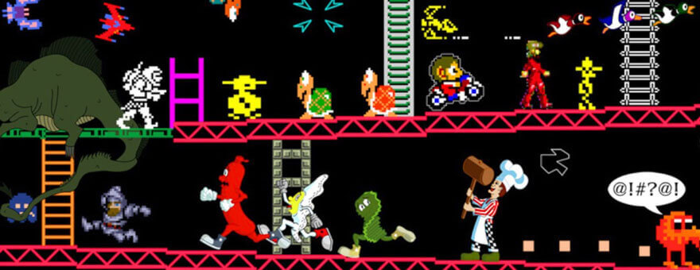

Что такое Ретро-Игры?
Конечно, вы слышали о термине "ретро-игры", но что же он означает на самом деле? Мы решили взять на себя смелость погрузиться в эту тему и надеемся, что просветим всех, кто это читает!
Прослушивание старой песни, которая нравилась вам в детстве, или просмотр любимых детских мультфильмов много времени спустя возвращает вас в прошлое и дает вам это прекрасное чувство сильнейшей ностальгии. В общем-то, в этом и есть вся суть ретро-игр. Суть в том, чтобы коллекционировать и играть в старые игры, которые сделали ваше детство намного лучше, так как все, чего вы хотели придя домой после школы - это включить игровую приставку и часами сидеть перед телевизором. Безусловно, игровая индустрия прошла долгий путь с точки зрения графики, геймплея и других игровых аспектов, но нельзя отрицать тот факт, что игры из прошлого доставляют нам столько же радости, как и раньше.
Термин "ретро-игры" не должен иметь обязательно четкое определение, поскольку идея того, что можно считать ретро-играми, меняется каждый год по мере выпуска новых игр и более совершенных технологий. Грубо говоря, игры на старых игровых приставках или игры, вышедшие много лет назад, попадают под определение ретро-игр. Такие игры как первый "Super Mario Bros" или первый "Sonic the Hedgehog", безусловно, попадают в эту категорию, поскольку они существуют уже несколько десятилетий.
И наоборот, некоторые люди не считают игры эпохи "PlayStation 2" обязательно ретро-играми. Однако, не все согласятся с этим, поскольку эти игры существуют уже более десяти лет. Учитывая все это и принимая во внимание то, что для ретро-игр нет строго установленного определения, в целом справедливо относить игры десятилетней давности к ретро-играм.
Так вот, причина, по которой ретро-игры остаются такими популярными до сих пор, заключается в том, что в этих старых играх есть определенный шарм, который просто напросто не исчезает. Самая первая игра "The Legend of Zelda" определенно не соответствует современным стандартам графики или даже игровой механики, но это не значит, что в нее не стоит играть. Да, игра может и не обладать новейшими техническими параметрами, но в ней все еще есть невероятно креативный игровой дизайн и впечатляющие моменты, которые сегодня доставляют такое же удовольствие, как и много лет назад, когда игра была впервые выпущена.
Популярность и привлекательность ретро-игр объясняются тем, что наслаждаться ими сегодня можно множеством способов. Многие игры были выпущены на старых системах, таких как "Sega Genesis", которые сегодня могут уже не работать. К счастью, преданные фанаты ретро-игр создали – или, лучше сказать, “воссоздали” их браузерные варианты. По крайней мере, есть программы, которые позволяют этим старым, но хорошим играм работать на современных системах. Эти игры совершенно бесплатны и мы можем наслаждаться любыми из них.
Помимо этого, много старых игр довольно часто обновляются и творчески преображаются в основном инди-разработчиками. Это - четкий показатель того, что ретро-игры невероятно популярны, и, скорее всего, в ближайшее время ничего не изменится. Просто в этих играх есть определенная привлекательность, которая остается неизменной, независимо от того, сколько времени прошло после появления игры или какой технологический прорыв был совершен.
Подводя итог, стоит отметить, что ретро-игры - сама по себе уникальная игровая ниша. Мы надеемся, что данная статья смогла просветить вас относительно того, что такое ретро-игры и почему они остаются такими популярными на сегодняшний день.
Synthwave и Retrowave - разбираемся с матчастью
В последнее время люди, с которыми я общаюсь о музыке, да и не только, очень частно стали округлять глаза, когда я рассказывал им про такой обширный и набирающий обороты пласт современной музыкальной и околомузыкальной культуры, как ретровейв. Так у меня и родилась идея этого материала. Отчасти это перевод кусочков из разных источников, отчасти мое, авторское видение темы.
Пожалуй, ретровейв - это самое интересное явление в современной не-популярной музыке последнего десятилетия. И наверно даже не имеющее аналогов - никогда еще музыка, навеяная эпохой тридцатилетней давности, не перерастала во что-то большее, в новое яркое музыкальное течение. Также очень интересно наблюдать фантомную настольгию у большинства почитателей этого жанра по ушедшей эпохе 80х — большинство из них тогда еще даже не родились.
Музыка Retrowave претерпела довольно сильную трансформацию за последние пару лет, как с точки зрения стиля, так и общего качества звучания. Поскольку жанр привлекает новых продюсеров и поклонников из разных музыкальных стилей, а старые поклонники уже начинают уставать от традиционного звучания жанра, становится более актуальным, чем когда-либо, обсуждать природу музыки - откуда она взялась, и, что важно, куда движется.
В двух словах, жанр можно описать как возвращение к звукам и образам поп-культуры 1980-х и самого начала 1990-х годов. Концептуально этот интерес к эпохе проявляется в двух значительных, часто взаимосвязанных формах.
Первым аспектом retrowave является романтизированное видение беззаботных летних дней, проведенных на прогулке, на пляже или в салоне игровых автомтов. Разумеется, 80х годов. Это видение часто ориентируется на изображения прибрежных городов США, таких как Майами или Лос-Анджелес, изобилует пальмами и закатами океанов. Такой себе идеализированный ментальный образ 80-х годов. Большинство наших сограждан, разумеется, этот образ почерпнули из фильмов и сериалов, но все равно с теплотой воспринимают его, потому что видели это в своем светлом и беззаботном детстве.
Второй основной концептуальный элемент retrowave связан с вездесущей любовью 80-х годов к науке и технологиям. Этот аспект выражается заинтересованностью retrowave-артистов внаучной фантастике, компьютерах, неоновых огнях и футуристических суперкарах. Он также распространяется на фильмы ужасов 80-х годов, которые сами часто содержат темы науки и техники.
Музыкально, влияние retrowave уходит корнями в саундтреки к фильмам и видеоиграм 80-х годов, хотя происхождение жанра относится к музыкальным стилям середины 00-х годов, включая disco- и nu house.
Однако, несмотря на довольно сильное тяготение к 80-м, retrowave - это не просто цитирование старых звуков и идей. Это ретрофутуристическая эволюция этих элементов, объединенная и принятая в альтернативную временную шкалу с подходящими отличительными музыкальными и визуальными аспектами. Это музыка будущего, которого никогда не было, но о нем мечтали в 80-х годах.
Еще совсем недавно, в 2014 году, вопрос о retrowave-поджанрах и стилях даже еще не стоял. Однако примерно с 2015 года в жанре наблюдается огромный приток артистов с различным музыкальным влияниям и бэкграундом. Retrwave быстро развивается, сокращая расстояние между множеством других жанров. В начале 2018 года retrowave и связанный с ним стиль darksynth неплохо уживаются с дабстепом, чиптюном, аггротеком, d'n'b, эмбиентом, альт-роком и многими другими стилями музыки, в том числе некоторыми поджанрами метала.
Поскольку retrowave продолжает перетекать в соседние музыкальные стили, и этот термин все чаще применяется к написанию песен, который не имеет отношения к оригинальному жанру, личность и дух музыки retrowave становятся более трудными для понимания. По этой причине полезно коснуться различий между разнообразными ответвлениями retrowave и понять некоторые их основные черты.
В чем разница между Synthwave и Retrowave?
Synthwave — это всеобъемлющий жанр «музыка со звуками синтезатора». Направление synthwave началось в конце 70-х годов и с тех пор существует до некоторой степени. Но было два момента, когда популярность росла: 80-е и … ну … прямо сейчас. Период бума в 80-х годах известен как Synthwave, так как именно здесь он стал чем-то особенным, в то время как сейчас происходит Retrowave.
Retrowave — это поджанр Synthwave, который полностью имитирует стили, ставшие популярными в период первоначального бума 80-х. У Ретровейв есть несколько под-поджанров, каждый из которых сфокусирован на одном из этих подражаемых стилей. Лучший способ разделить их — описать сцену и позволить себе представить саундтрек к ней.
Термины «synthwave» и «retrowave» - это современные названия основного жанра, и они широко используются при разговоре об этой музыке. Эти два термина примерно эквивалентны, хотя между ними есть полезное различие: «synthwave» относится конкретно к музыке, а «retrowave» - всеобъемлющий термин, который также относится к произведениям искусства, одежде, видео и другим медиа, которые вызывают ностальгию по 80-м (разумеется, нужно понимать, что мы имеем в виду 80-е именно в США).
Outrun / Outrun Electro
Во время формирования стиля retrowave, «outrun» и «outrun electro» были наиболее распространенными названиями для этого зарождающегося жанра: «synthwave» и «retrowave» обгоняли их по популярности только примерно в 2013 году. Поскольку жанр продолжает расти и развиваться, «outrun», остается полезным термином для описания специфического музыкального стиля, установленного самыми ранними релизами. Примерами альбомов, которые формировали звуковую и визуальную эстетику этой музыки в конце 00-х до 2010 года, являются:
-
Kavinsky
- Teddy Boy (2006)
- 1986 (2007)
- Nightcall (2010)
-
College
- Teenage Color (2008)
- Secret Diary (2008)
- A Real Hero (2010)
-
Futurecop!
- The Unicorn & The Lost City of Alvograth (2008)
-
FM Attack
- Dreamatic (2009)
-
Mitch Murder
- After Hours (2009)
- Television (2010)
-
Lazerhawk
- Redline (2010)
-
Miami Nights 1984
- Early Summer (2010)
Outrun как поджанр retrowave особенно хорошо представлен альбомами 2010 года Miami Nights 1984 и Lazerhawk, а также их последующими релизами в 2012 году, Turbulence и Visitors. В этих записях особенно ярко отражаются упомянутые выше элементы стиля - суперкары 80-х годов, поездки на авто по ночному городу, пляжные закаты и винтажная фантастика. Эти аспекты визуально представлены в обложках альбомов и названиях треков, а также музыкально выражены яркими, ретро-синтезаторными звуками, яркими характерными мелодиями и включением винтажных музыкальных элементов из фильмов, телевидения, видеоигр и, в меньшей степени, «синтипопа 80-х» и электро.
Примечательно, что темы спорткаров и визуальная эстетика outrun берет свое начало с аркадной игры 1986 года Out Run, которая сажает игроков за руль виртуального Ferrari Testarossa, проводя их мимо солнечных пляжей с пальмами. Это влияние отражено в названиях исполнителей, альбомов и песен. Например, The Outrunners выпустили свой «Running for Love and Money EP» в 2010 году. Полноразмерный альбом Kavinsky в 2013 году также называется OutRun, и многие другие исполнители synthwave использовали имя outrun в своих творениях.
В общем, для outrun типична прямая бочка, напоминающего french house-музыку и ее корни в euro disco и synthpop, а также чистые и запоминающиеся синтезаторные мелодии. Структурно, музыка часто проста, и редко даже стремится к относительной сложности структуры стандартной поп-музыки. Как и house, раннее outrun часто поддерживает единый ритмический паттерн и только одну или две ведущие мелодии на весь трек.
Outrun остается актуальным и заметным в 2017 году и в начале 2018 года с такими записями, как Tokyo Rose's The Chase: Last Run, Kiile's Kiile и CJ Burnett's Moonlit City, которые представляет современные образцы современного прочтения outrun. Другие альбомы, такие как Massive Scoop от Overvad и Cocaine Flamingo от Ace Marino, имеют уже более развитый стиль, который, однако, старается остаться в рамках с классического outrun.
Таким образом, outrun можно назвать родоначальником стиля retrowave, породивший все остальные, более продвинутые стили retrowave.